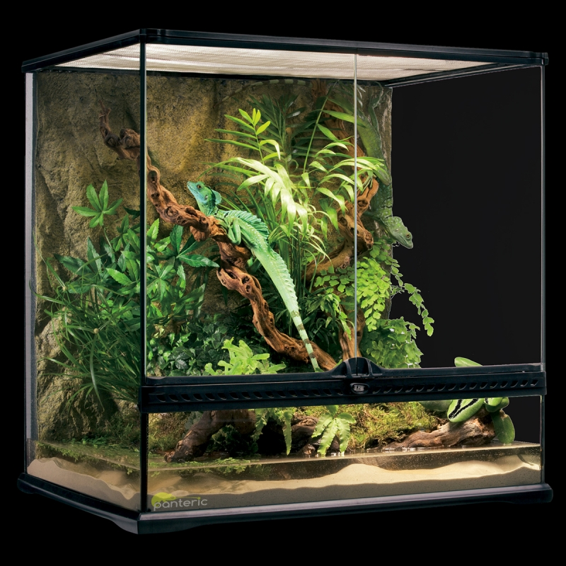
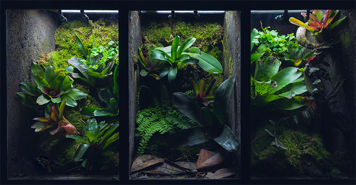
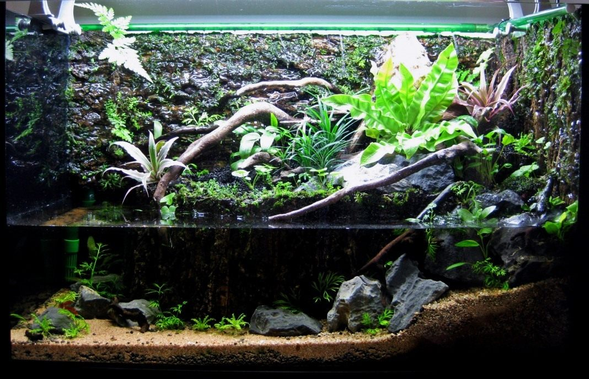

Террариумистика
Террариумистик – это человек, увлеченный созданием домашнего биотопа.
Террариумистика – может считаться как наукой о террариуме, так и хобби, для человека увлеченного террариумом.

Террариум, является великолепным дополнением к любому интерьеру и может служить прекрасным украшением в вашем доме или офисе, живой биотоп – это кусочек живой природы, среди каменных стен и мебели. Многие люди увлекаются террариумистикой, создавая домашний террариум, человек может воплотить самые смелые задумки, используя камни, коряги, мхи и другие декоративные украшения. Экзотические животные, живущие в террариумах очень разнообразны, для содержания в террариуме, предоставляется большой выбор: черепахи, змеи, ящерицы, крокодилы, крокодиловые кайманы, обезьянки. Каждому экзотическому животному и даже растению требуется специализированный террариум, где важную роль играет конструкция и микроклимат. Микроклимат – должен строго соответствовать всем требованиям содержания конкретного вида животного, поэтому перед покупкой рептилии, необходимо все тщательно продумать и создать и обустроить работающий террариум, а потом поселять животное. Животное, которое будет жить в вашем террариуме, полностью зависит от ваших знаний по содержанию, прежде чем купить животное, создайте для него все условия.
В террариумистике существуют различные типы террариумов:
- Сухой террариум
- Влажный тропический террариум
- Водный террариум (акватеррариум)
Сухой террариум, чаще всего используют для сухопутных рептилий, черепах, агам, других ящериц, змей, сухой террариум с растениями используют для кактусов.
Влажный террариум предназначен для содержания тропических рептилий, игуан, хамелеона, тропических ящериц, тропических змей, тропических насекомых, влажный тропический террариум с растениями используют для содержания влаголюбивых декоративных растений, разного вида орхидей в качестве орхидариума.
Водный террариум (акватеррариум) предназначен для содержания водных рептилий, амфибий, например, для красноухих черепах, болотных черепах, черепах трионикс, крокодилового каймана, лягушек, тритонов, для содержания водных болотных растений, для создания палюдариума.
Террариумистика, предоставляет возможность для создания любого домашнего биотопа, в виде террариума. При формировании террариума, включите ваше воображение и фантазию, вам открываются безграничные возможности задекорировать террариум под пустыню или под тропический лес со свисающими лианами, под болото с цветущими кувшинками. Некоторым экзотическим животным, например игуанам, хамелеонам, требуется содержание во влажном тропическом климате, поэтому в террариуме можно создать водопад или небольшой фонтан. Водопад в террариуме, это не только влажность воздуха, но и прекрасный элемент оформления, дизайн террариума – это один из важнейших этапов в террариумистике.

Как создать террариум своими руками?
Террариум – это не только его стеклянный корпус, слово «террариум» подразумевает и оборудование для создания микроклимата, и наполнение, состоящее в основном из элементов оформления, водоема или суши, иногда и того и другого, заселение стеклянной емкости животным, все это в целом – террариум, действующий живой биотоп. Чаще всего, увлеченные террариумисты, самостоятельно «строят» внутреннее наполнение террариума, но далеко не всё можно создать в домашних условиях, например, резка, обработка, склейка стекла, происходит в производственных условиях, поэтому корпус террариума проще купить готовый, а затем приступить к его внутреннему созданию. Задняя фоновая стенка террариума, является очень важным местом, ее оформлению надо придать особое значение, учитывая вид животного, рептилии или растения. Заднюю стенку террариума можно оформить искусственным или натуральным камнем, декоративным объемным фоном из полиуретана, чаще для оформления фоновой стенки террариума используется полотно из модулей коры пробкового дуба, модули легко прикрепить к стеклу аквариумным силиконовым клеем, а к коре можно прикрепить лианы или коряги. Все это можно сделать своими руками в домашних условиях.
В террариумистеке часто звучит слово «Палюдариум» - что это?

Термин "палюдариум" произошел от латинского слова "Palus", что означает "болото", палюдариум – банка с болотом. Звучит немного смешно, мы представляем в качестве болота грязную, заросшую тиной лужу, но на самом деле, это не так. В болотах растет много красивых растений с интересными формами. Палюдариум – это искусственно созданный биотоп в домашних условиях для содержания водных, болотных, прибрежных, наземных влаголюбивых декоративных растений. В палюдариуме можно создать болото тропического леса или подмосковное болото. В палюдариум можно запустить рыбок, улиток, тритонов, лягушек и других земноводных.